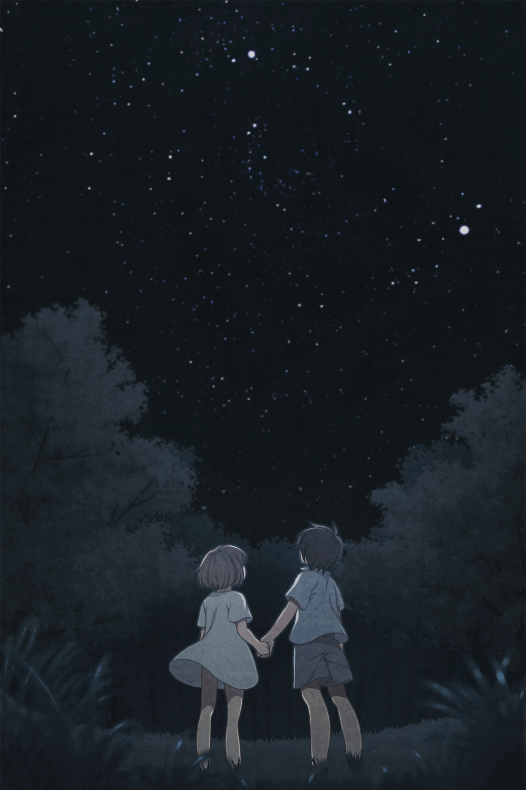
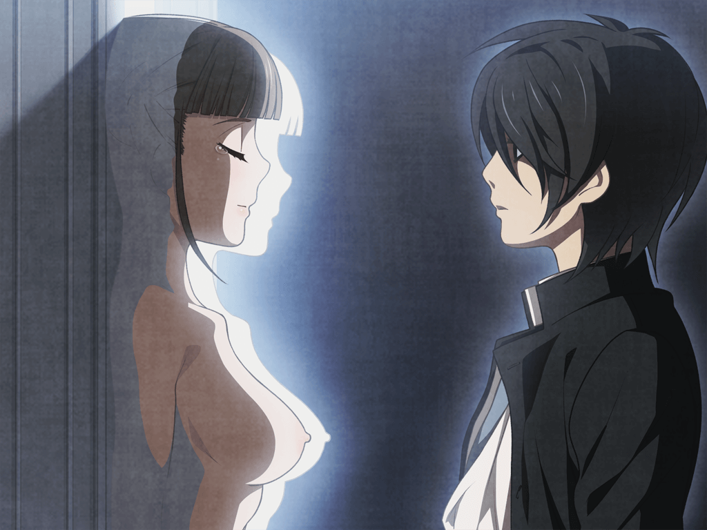
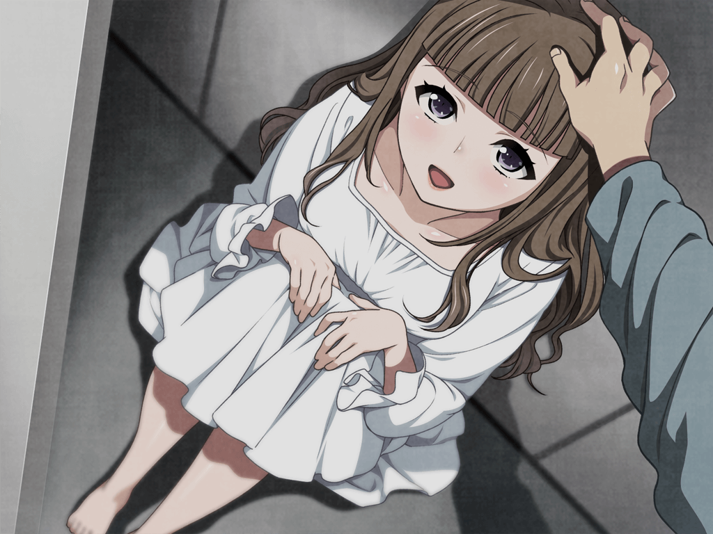

注：本剧情流程将以TE线为基础，适当补充其他线路中的重要剧情。补充内容包括：合欢线路、凛音线路、其他线路。
男主惠辅醒来，发现自己和青梅竹马帆刈叶、学妹莳羽梨香、班长安藤都子、邻班女生白夜凛音、同班的高岭之花真中合欢以及英语老师葵菜月共七人身处一个纯白但空无一物的房间，所有人脖子上都带着一个项圈。按响起的机械合成音说明，他们需要打开5扇门才能离开这里，而方式却是通过五轮游戏，每一轮都需要从她们五人中选择一位，两人无条件地执行游戏给出的要求。班长安藤都子接受不了这样的规则表示要退出，却被不明的方式绑在电椅上，在其他人面前被电击而死。所有人里，只有白夜凛音和真中合欢对这一切表现得异常冷静。然而男主却对这惨剧表现出了异常的欲望，还被真中合欢发现了。为了让她保守秘密，惠辅答应服从她的三个要求。但两人在商议时却被叶看到，合欢还立刻表现出亲密的样子，似乎很享受让惠辅苦恼的样子。然后她“请求”（而不是要求）惠辅在第一轮中选择叶。
惠辅本来决定利用其他人保护叶，然后两人从这里出去后再次回到平静美好的日常生活中去，但合欢的话在他脑中苏醒，惠辅选择了叶。但两人都没想到，这第一轮的内容却十分温和。
结束后，虽然表现得很冷静，但行事作风一直与合欢相左的白夜凛音与合欢起了点小摩擦。据惠辅调查，整个主房间中只有一个标有厕所的水桶，一个标有饮用水的水桶以及一个看起来豪华，但却被玻璃幕墙阻挡无法进入的房间。而且方才班长死亡的房间里，只留下了她的名牌，其他痕迹似乎都消失了一般。合欢找到他并施以嘲讽，他也爽快地承认了自己既重视着叶，也一直都想对叶做出这些过激的事而压抑着内心的黑暗想法，而不认为自己是听从了合欢的话。但合欢却像很了解他一样认为他必定会一直选择叶的——因为如果一直选择同一个人，游戏的要求就会越来越变态。
第二轮虽然激烈，但叶事后没有表现出任何排斥，仍然关心着他，惠辅也很好地隐藏着自己对叶黑暗的想法。之后的下一轮却并非第三轮，而是为了解锁VIP室——即那个吃住都异常豪华的大房间——而进行的。两人都选择了参加，也成功地达成了条件。然而VIP室只允许两个人进入，在合欢的要求下，惠辅把自己的机会让给了合欢，叶则让给了梨香——即使大家都不太喜欢梨香那公主病的性格。其余的人遵照机械音的指示进入了一个简陋的休息室，吃过简单的压缩饼干后在简易的钢丝床上休息。全面熄灯后惠辅和叶聊着两人之前在学校天文社一同观星，制作星目表的回忆。惠辅也向叶大致说明了自己与合欢之间有一个不能说的约定，他自己是一直期望着能从这里出去，然后和叶一起回到平凡但美好的日常生活中，叶也对他表示理解。然后，叶向惠辅告白了，但惠辅却从未将叶看作过恋爱对象。从小无父无母，只靠收养他的叔叔抚养长大的惠辅一直将她当作最亲密的家人。但叶对他越亲密，两人关系越好，他内心深处折磨虐待叶，让她痛苦的欲望就越庞大，但他无法也不能对叶坦白。但就是这样的他，也在梦中念着前不久两人一起看流星雨的约定。
次日清晨，惠辅早早地来到主房间时，却发现合欢独自倚靠着墙，用寂寥的表情轻声哼唱着小星星童谣。但在第三轮结束后，合欢又来嘲讽内心纠结着的惠辅而被冲动的惠辅掐住脖子，但随后进来的叶制止了他，并表现出了对惠辅的绝对信任，表示她会接受他对自己做的一切，不想让惠辅被其他人夺走。在与凛音的交谈中，她提到自己曾来到过一个跟这里很像的地方，并请求惠辅和她一起寻找她记忆中可能存在的暗门。接下来的第四轮和奖励轮次两人也都顺利通过了。在VIP房里，叶向惠辅表示即使他对自己做再过分的事她都会绝对接受，甚至想成为惠辅的所有物。但惠辅心中的黑暗却越来越庞大，甚至有了虐杀叶的想法。他知道，即使能顺利出去，他所期望的日常也已经回不去了。
次日早晨，惠辅独自在自己最初醒来的房间中搜索，竟真的找到了一扇通向地道的暗门！然而还没来得及调查，第五轮就开始了。但让所有人意外的是，五扇门后竟然还有一扇门。3小时的等待中，虽然惠辅一直对合欢时不时露出的与她性格不符的寂寞的神情有些在意，但还是决定不再与她扯上关联，他想要与叶在一起。之后惠辅和凛音进入早上发现的那个洞穴内进行探索，却发现尽头是被土块掩埋的死路。凛音向惠辅讲述了她自己的故事。原来没有母爱的她小时候被母亲送进了与这里相似的研究所，但没多久母亲就死了，她进入了宗教性质的养护设施。但那时开始她就经常这样发病，也因此被修女们厌恶折磨，除了一位老修女。之后她以老修女为榜样努力上进，最后来到了这所学校。
惠辅从小憩中醒来，却发现房间里等待的其他人都消失了，而计时竟然在增加！他冲到最后一扇门前发现门已经打开了，但等待他的却是另一个恶趣味游戏，即若他不能将其他五人从陷阱中救中则会死亡的游戏。首先是通过操纵杆将老师从上升的水位中救出，但操纵杆上施加的强大电流让惠辅昏迷了过去，他失败了。之后是被绑住面对发射飞刀的合欢。无视心中恶魔的嗫嚅，惠辅冲上去为合欢挡住了飞刀并关掉了开关，但让他感觉很不可思议的是，那个一直嘲讽、威胁着他的合欢竟然温柔地给他治疗了伤势。接下来是被绑在断头台上的凛音，惠辅和合欢合力，成为救下了她。下一个是被与炸弹关在一起的叶，在合欢的记忆力的帮助下，惠辅成功输入了密钥救出了叶。最后是梨香。惠辅狠狠将合欢打晕，救出了被夹在碾压墙后的梨香，合欢也安抚了梨香的情绪。打开了最后一扇门后，所有人一起向出口跑去，但惠辅却在半路上失去了意识。混乱的梦境中，他正领着某人逃跑，而身后追赶的人正准备杀死他们。
惠辅从噩梦中惊醒，发现自己身处一个仓库一样的房间，之前的伤口也都被妥善处理过了。爬上一部梯子后，他终于来到了外面，是夜晚的树林。走了没多久，他终于见到了自己的学校。但校舍里却空无一人，而且满地狼藉，仿佛才刚经历过一场暴力劫掠一般。唯一有火光的庭院内，竟然是许多学生们在一起混乱地交媾！这时合欢出现在了他的身后，声明破坏学校，包括刚才在地下发生的一切都是她的所作所为，因为她已经是这座学校的支配者了，而且她还表现出了对惠辅极大的兴趣，想将他收做自己的玩物。然后，她亮出了被束缚当成人质的叶。就在惠辅因愤怒冲向合欢时，凛音出现拉住了他让他停了下来，将他带到了不愿被合欢支配的学生们所在的地下秘密洞穴中。这里似乎是由凛音为首领导的一个反抗合欢的秘密组织。
凛音告诉惠辅，她在回到地面后也不知道形势是如何变成这样的。她只知道最初是所有学生都被要求互相残杀，一旦离开学院一定范围也会被杀。合欢通过不明的方式策划了这些并当上了支配者，成为支配者的她背后有一股很强大的势力，迫使她手下的人必须服从她。学院中的学生属于合欢势力，也都拥有武器，所以一定是之前死亡游戏的胜利一方。关于项圈，凛音说所有学生本来都戴着项圈，而她的这个组织拥有取下项圈的技术，但为了防止情况暴露，想要取下项圈就必须加入她们组织。虽然凛音现在已经取下了项圈，但也并没有进入地下游戏之前的记忆，惠辅分析是受到之前合欢通过项圈操纵记忆的影响所致。
惠辅发现白夜凛音领导的这个组织有些奇怪，不仅成员都穿着黑袍，管理方式与宗教十分相似，并且白夜凛音领导的这个组织的口号与地下游戏中主显示器上写的是一样的。他准备先观望一下而非贸然加入。然而在随凛音势力进攻合欢势力时，惠辅发现凛音手下的学生虽然都没有带武器，而且被打也不还手也不恐慌，只是凭借着如宗教口号般的信念向合欢的所在地前进。但就在快接近合欢时，包括惠辅在内的所有黑袍学生都被不知名的力量击飞，动弹不得。合欢出现后，说明了自己就是靠着项圈操纵着一切的，然后将惠辅关了起来。
被抓住的惠辅分析，这一切应该是从合欢转校入学开始就开始谋划的，首先进行的应该是学校内部互相残杀的死亡游戏，胜者是控制了学校的合欢，而败者应该就是躲藏在洞穴中的凛音势力。既然一直没有学校外部的消息，那么合欢背后的势力或是这个游戏的主办方应该在社会上拥有很大的能量。之后，合欢出于某种目的选出了他们几人，修改了他们的记忆后强迫参加地下设施中的游戏。
次日，合欢又在挑唆惠辅遵从他内心的疯狂欲望但并没有成功，于是惠辅和一位凛音势力暴露了的间谍被合欢当作了诱饵，准备利用他们找到凛音势力的所在地。在路上惠辅得知，凛音似乎可以在大约几十米的范围内用意念操纵一切；出入学校的道路也被封锁，只有送货的车辆可以进出；学校的一部分老师也在死亡游戏一开始就被杀掉了。成功见到凛音后，她像宗教的创始人一般被其他学生所崇拜着，用宗教般的言行引导着他们，用鞭打的方式净化并救赎他们。从信徒学生口中得知，原来他们都相信学院外的世界已经崩溃，已经没有外部力量能帮助他们了。此外，在地下游戏之前的死亡游戏之中，惠辅似乎还是救了凛音她们组织，并将操纵着死亡游戏的合欢逼到绝境的功臣，虽然最后还是被合欢抓住了。但这时惠辅脖子上的某个印记却让凛音很吃惊，她说惠辅是预言中所说的命运之人。不知何时，凛音手下的人已经清理出了设施地下的那个洞穴，那里面是凛音所说的“第一之门”。凛音用脖子上戴着的一个首饰打开了门，露出一间充满宗教感的地下室。地下室的一面墙上是“第二之门”，打开后里面只有一具干尸，凛音说那是她的母亲，而且被放置在这里是她自己的愿望。凛音说，她母亲预言了惠辅的出现，他是救世主之父，他脖子上出现的和第二之门上相同的印记就是证明；而她是救世主之母。凛音想利用他让自己怀上新的救世主时，相似的记忆在惠辅脑中闪回，原来在惠辅小时候他就被凛音的母亲诱拐到这里，并被她强暴使她怀孕，生下了凛音，但因为凛音是女性而无法成为救世主而让她一直憎恨并诅咒着凛音。虽然惠辅发现两人的年龄似乎有着巨大的不合理之处，但已经近乎疯狂的凛音只认为这是奇迹导致的。
惠辅就这样被凛音关了起来。但就在他获得了凛音手下的信任时，合欢对凛音据点的进攻开始了。一个身穿紧身衣的人轻易打倒了凛音手下的人，还让他将已失去反抗能力的凛音带给合欢。
当惠辅将凛音背回后，梨香竟然讨好般地出现在合欢身边，但被合欢残忍地与凛音一同惩罚，但惠辅心中黑暗的欲望却让他感到很兴奋。当晚的梦中，惠辅看到了在死亡游戏中，自己所加入的那方本与对方达成了不使用武器的停战协定，却被对方单方面撕毁的记忆。
次日，合欢继续通过折磨被抓住的凛音引诱惠辅内心的欲望，但惠辅强压下了心中的黑暗，反而开始憎恨这样做的合欢。他挑衅般地向合欢要求她身边那个武艺高强的神秘黑衣人，但没想到合欢竟然同意了。惠辅这才知道那个黑衣人竟然是本应在地下游戏中死去的葵菜月老师！原来地下游戏中，她一直按合欢的命令在身边监视着他们！但让惠辅意外的是合欢居然答应让惠辅和叶在一起。从叶口中惠辅得知，那天他们从地下逃出时，是凛音和叶将他运到那个房间里的。凛音之后先出去了，而叶在出去放哨时被合欢抓住。第二天合欢让他亲自折磨梨香，还诱导他对叶做出同样的事。晚上惠辅设法与凛音见了面，凛音告诉他死亡游戏仍在继续，只要他能将合欢击败就能当上新的支配者。
合欢似乎是失去了耐心，开始对叶下手了。但惠辅为了叶的生命安全仍然隐忍着合欢对叶的当众羞辱。当晚的梦中，他看到了自己带着某人同凛音一起找到了停止项圈机能的方法。然后，他和身边的那人准备一起去广播室找合欢对峙。突然惊醒的惠辅循着记忆，非常顺利地来到了广播室。记忆突然从大脑中涌了出来。记忆中，他们听到了广播中的死亡游戏的规则：每人颈上的项圈中都有1的点数，折磨或杀死他人能夺取点数，到达100就可以成为独裁者，并获得使用武器的权利。而只要杀死独裁者就能取得他的支配权。之后，他们在凛音的掩护下逃脱了追击到达了广播室。但这是一个陷阱，惠辅为了保护身边的少女而腹部被刺，之后就失去了意识。从记忆中清醒的他看到了面前等着他的正是合欢。她告诉他，是她通过记忆操作引他来到这广播室里，而学院中发生的一切都是她为了取乐才来到这个学园的。在过程中合欢发现了与自己有同样想法的惠辅，而想释放他内心的恶魔才对他如此关注。这更是激发了惠辅对她的憎恨。
惠辅询问叶，才知道叶一直都保有之前死亡游戏时的记忆。当时，叶和惠辅进入广播室却中了陷阱，为了救惠辅，叶与合欢打了赌，赌注是地下游戏中惠辅会不会输给合欢的诱惑。所以除了她的合欢，其他人都被抹除了记忆，她虽然知道实情却无法开口。至于为什么合欢想让他看到广播室的这一幕，他有些想不通。
次日，合欢竟然想杀掉叶！为了救出叶，惠辅扑上去掐住了合欢的脖子，并将狂笑着的合欢活活掐死。然而视野一转，惠辅发现自己竟然再次身处白色设施内部的一个水槽中，而外面竟然是穿着白大褂的叶在看着他！
根据这个叶的说明，他正处于一种直接通过大脑连接进行的游戏之中，之前所发生的所有的事都是在游戏中发生的。而且叶说这是他主动应征加入游戏的，虽然他并没有这部分记忆。在叶的带领下，他又见到了活泼可爱的梨香，梨香知道自己之前进入了游戏，但她说她和惠辅并不在同一个游戏中。这时，菜月进来了，她自称与惠辅初次见面，是这座设施的咨询顾问。然而惠辅觉得这一切都太异常了，他不相信现在所看到的是真实的。他夺过叶手中的磁卡，在设施里漫无目的地跑了起来。果然，一切的道路都和之前的记忆一模一样。终于，他跑回了学校。
然而在学校的庭院里，放置了数百个袋子，每个袋子里都是一名学生。据突然出现的叶说他们都暂时没死，而是器官交易的来源。恐惧让惠辅立刻逃走，但却突然回到了设施里与叶再次对峙。叶解释说这都是通过项圈操作的虚拟现实，但庭院里假死的学生们都是真实存在的。刚才的逃跑路线也是操作了他的五感让他主动跑回这所设施。他方才在游戏中所看到的叶都是由她假扮的。从进入游戏的一开始，惠辅就被剥夺了原有的记忆，并替换上了虚假的记忆。再次逃跑的惠辅逃进了一个房间，而那里却是只剩一半肉体，成为这座名为“乐园”设施的备用核心的白夜凛音，而她竟称惠辅为“父亲大人”。据叶说，凛音是某次实验的废弃产物，为了物尽其用才把她做成这样。
面对冷静下来的惠辅，叶似乎不准备做其他的解释了。据迎面走来的菜月所说，她在进入学校任职时就已经是“乐园”的人了。随后，惠辅被菜月绑到一个房间，被叶操纵体验了数段伪造的幻觉，即使在幻觉中惠辅也还是对叶充满了绝对信任的爱恋。但随后，她就对惠辅只知道沉迷于对虚假的叶的爱感到厌烦了，她喜欢以惠辅的痛苦为乐。她说她自己输掉了与合欢的对赌，并准备按照赌约，将惠辅还给合欢。
惠辅被叶带到了深深的地下，一扇巨大的白色的门前。据叶说，所谓“乐园”其实只是位于一所被伪装成医院，做返老还童研究的设施底层——第四层的一个研究项目，而这扇门后就是“乐园”。从门后的玻璃板处俯瞰，下面是白大褂忙碌着的研究员，以及“乐园”的现役生物核心“睡美人”——一个长期沉睡着的，曾因自杀而成为植物人的女性。最早的时候，在“乐园”创始人帆刈英一的努力下，成功在这名女性身上应用了最尖端的延命成果，并将她所编织的梦境数据化，以让所有连接到“乐园”的人参与进来——他们就是“乐园”中的居民，都是现实世界中的富豪和政治家等人，他们都是为了追寻无上的幸福感而来。而如果要成为能编织出美妙梦境的睡美人，必须要对现实世界完全绝望，逃避进自己的梦境中才可以。至于这所六庆馆学校，也是研究所的附属设施之一。在这里，所有入学的学生都必须佩戴项圈，因此这所学院、地下设施等处举行的死亡游戏，都是通过项圈操纵大脑，为了心理学或其他目的进行的人体试验以及心理学观察及数据分析，同时也是为那些富豪准备的，如赛马场一般的赌博沙箱。而这些学生都是被筛选出的没身份没背景的普通百姓，并通过某些手段诱骗进这所学校上学。幸存下来的学生一些被人口买卖处理掉，一些用做人体实验，另一些则进行器官交易。不管学校里发生了什么都会被他们背后的势力压下去，当成普通的事故处理。而惠辅现在的任务，就是在现役睡美人坏掉之后，和下代睡美人——合欢，一同编织新的梦境。
真正的记忆涌入了惠辅的大脑。原来他真正的青梅竹马竟然是从小就在“乐园”长大，通过克隆技术制造出的真中合欢。他小时候在自己的秘密基地——洞穴中与从“乐园”中意外跑出的合欢相识，也展示给了合欢在“乐园”中看不到的美好之物，看到了夜晚的星空，教会了她唱小星星的歌曲。然而好景不长，合欢和惠辅很快就被“乐园”抓回，合欢被迫选择同意清除惠辅的记忆，但她从未忘记过惠辅。

星空下的回忆
但没过多久，位于设施一层的医院被一个奇怪的教团攻破并掳走了一名男孩，之后二层——防空洞层也被攻陷，但一位具有双性症，通过强暴那名被掳走的男孩怀上了孩子的教母因她罕见的病而被研究员吹捧为救世主，并进行医学研究，而她怀上的孩子也具有双性症，在尖端生命科技的作用下飞速长大，但不幸的是，试验性质的医学治疗让那孩子成为了一名女孩，从而被想要男孩的教母所憎恨。同时，在针对教团的反攻中，研究所利用病毒消灭了所有驻扎在二层的教团成员，只有那个在尖端生命科技保护下的女孩活了下来。那个被掳走的男孩就是消除记忆后被医院所收容的惠辅，在教团覆灭后，与一名被派遣去消灭教团的佣兵一同消失了。尔后，合欢被故意领到地面观看学院中举办的残酷的死亡游戏，目的就是为了让她对现实绝望，躲藏于梦境之中。但她记忆中的惠辅却让她坚信惠辅正在世界上的某处生活着，而无法对这个世界抱有绝望。
后来，在收养惠辅的叔叔因意外身亡之后，孤身一人的惠辅经学校老师的劝说而转入了这所六庆馆学校。同时，帆刈英一的女儿——天才研究员帆刈叶和白夜凛音也进入了这所山中的学园读书，葵菜月同时担任英语老师，目的是保护睡美人合欢。在有意的操纵下，合欢转入惠辅的班级，惠辅也想起了小时候曾与合欢相识，并与合欢的关系逐渐升温。两人和叶、莳羽一起加入了天文部，一起观星，一起做出了一同看流星雨的约定……能享受到这怀念已久的一切，合欢认为研究人员已经改变了策略，不再需要让她对现实世界绝望，而是通过让她体验温情的人生来达成目的。然而，在广播的宣告下，一场充满杀戮的死亡游戏毫无征兆地开始了。而当他们找到了线索，成功到达广播室才发现，这是个陷阱，一切的主谋正是前不久还与大家讨论着观星和野餐的帆刈叶！为了保护合欢而受了致命伤的惠辅倒下了，而陷入绝望的合欢正是帆刈叶想要的状态。为了救惠辅，她同意了杀人凶手——帆刈叶的对赌，在修改惠辅记忆后进行游戏，只要让惠辅憎恶合欢并且杀掉她，就算合欢的胜利，惠辅就能得救并回到她身边。并且每局游戏的终止条件是惠辅彻底爱上其中的任何一人。
合欢让惠辅体验了一段完美的，他一直在追求的温馨的学园日常，但他却拒绝了，还劝说合欢不要前往“乐园”。现在，惠辅终于再次见到了合欢的意识体。虽然已经对世界绝望，但她还是想将惠辅从这痛苦的现实中拯救出来，一同前往没有痛苦，充满了永恒的欢欣感(euphoria)的乐园。但惠辅拒绝了合欢的邀请。他指出了合欢行为中的矛盾，既然乐园是完美的，能实现一切愿望的地方，为何还要执著于拯救现实世界中濒死的自己？所以，合欢内心是知道的，现实中一旦失去，就再也无法回归了。所以，不论会遇到什么艰难和挫折，惠辅都要想要去拯救现实中的那个合欢，而不是逃避到梦境的乐园中去。也许这辈子再也无法与她相见，他还是要在现实世界中为这个目标努力——

“我会让你获得真正的幸福。”
在菜月和凛音的帮助下，惠辅顺利离开了设施。只有菜月悄悄给他留下了一张字条。
离开设施后，惠辅靠着打工生活，并最终按菜月留下的字条联系上了她。现在的菜月已经离开了那个研究所，是一名自由佣兵了。据她说，叶的母亲铃本惠美，是最早“乐园”计划创始人帆刈英一的妻子，但她同时也是B势力的间谍。在获得英一的信任并与他结婚生下了帆刈叶后，为了帮助所属势力获得“乐园”计划的控制权而抛弃了叶。而叶被B势力收养并被培养为研究员。但她最终却走上了与她最厌恶的母亲相同的道路——成为了C势力的间谍。本来她的目的是为了探查“乐园”以及“睡美人”的情报和样本，而将合欢本体劫出，移交给她所属的C势力。然而半年前，就在交付合欢的现场，她却挟持了合欢独自逃掉了。所以，为了寻回合欢，惠辅请求菜月收自己为弟子以期能以自己的力量保护合欢。
三年过去了。在这期间，他获知了曾经收养他的叔叔正是与菜月熟识的佣兵之一。“叔叔”带着他辗转多地旅行生活就是为了逃脱研究所势力的追查，但最终“叔叔”还是因“意外”而死。在这三年间，他自己也成为了一名能独立执行任务的佣兵。而这次，他回到了记忆中的地方，也是最新线索显示帆刈叶逃到的地方——那所曾经满载着好与不好的回忆，但现在已经随着合欢的失踪而废弃，即将被拆除的学园。在学园中，他找到了叶留下的，只有他们从前天文部的小伙伴们才能想到的线索，并成功找到了叶。但她已经在别的势力的暗杀者的攻击下身受重伤，死在了惠辅面前。惠辅终于在隐蔽的衣柜中找到了他朝思暮想的合欢。虽然当初惠辅选择离开她给予她的精神损伤让她回到了小时候的人格，但惠辅相信在以后的时间里，两人还能再次重拾过去，构建出新的回忆，一同幸福地生活下去。（完）

《重逢》